CS280A · Project 3
Fun with Flow Models
Pretrained image generation and editing, visual illusions, and learning a flow model on MNIST.
Part B - Flow Matching from Scratch
Part B - Flow Matching from Scratch
I first train a single-step denoiser on MNIST, then learn time-conditioned and class-conditioned velocity fields for generation. Finally, I explore longer training and greater capacity in the time-only model, as required for CS280A.
MNIST has 60,000 training and 10,000 test images. Pixels stay in [0, 1]. Training batches are shuffled; test batches are not. Labels are used only in the class-conditioned flow experiments. Noise and time values are sampled freshly during training.
| Experiment | Hidden width | Epochs | Batch | Adam learning rate |
|---|---|---|---|---|
| Single-step denoiser | 128 | 5 | 256 | 0.0001 |
| Independent pure-noise experiment | 128 | 5 | 256 | 0.0001 |
| Time-only baseline | 64 | 10 | 64 | 0.01 -> 0.001 |
| Class-conditioned baseline | 64 | 10 | 64 | 0.01 -> 0.001 |
| Class-conditioned comparison | 64 | 10 | 64 | 0.003 constant |
| Continued time-only model | 64 | 30 total | 64 | extra phase: 0.001 -> 0.0001 |
| Fresh wider time-only model | 128 | 30 | 64 | 0.001 -> 0.0001 |
The denoising objective predicts a clean image. The later flow objective predicts velocity. Their loss magnitudes should not be compared as if they measured the same task.
B1.1 - UNet Implementation
The UNet uses convolution blocks, two downsampling stages, a pooled bottleneck, upsampling stages, and channel concatenation for skip connections. Each ordinary convolution is followed by batch normalization and GELU. ConvBlock applies two convolutions.
| Operation | Kernel / stride / padding | Purpose |
|---|---|---|
| Conv | 3 / 1 / 1 | Preserve spatial resolution |
| DownConv | 3 / 2 / 1 | Halve spatial resolution |
| UpConv | 4 / 2 / 1 | Double spatial resolution |
| Flatten | Average pool 7 x 7, then GELU | 7 x 7 -> 1 x 1 |
| Unflatten | Transpose convolution 7 / 7 / 0 | 1 x 1 -> 7 x 7 |
The decoder incorporates the corresponding encoder features through skip connections. Shape checks confirm that a batch of 28 x 28 images produces an output of the same shape.
B1.2.1 - Single-Step Denoising
I visualize noise levels 0, 0.2, 0.4, 0.5, 0.6, 0.8, and 1.0, then train a fresh D = 128 model at sigma = 0.5 for five epochs with batch size 256 and Adam learning rate 0.0001.
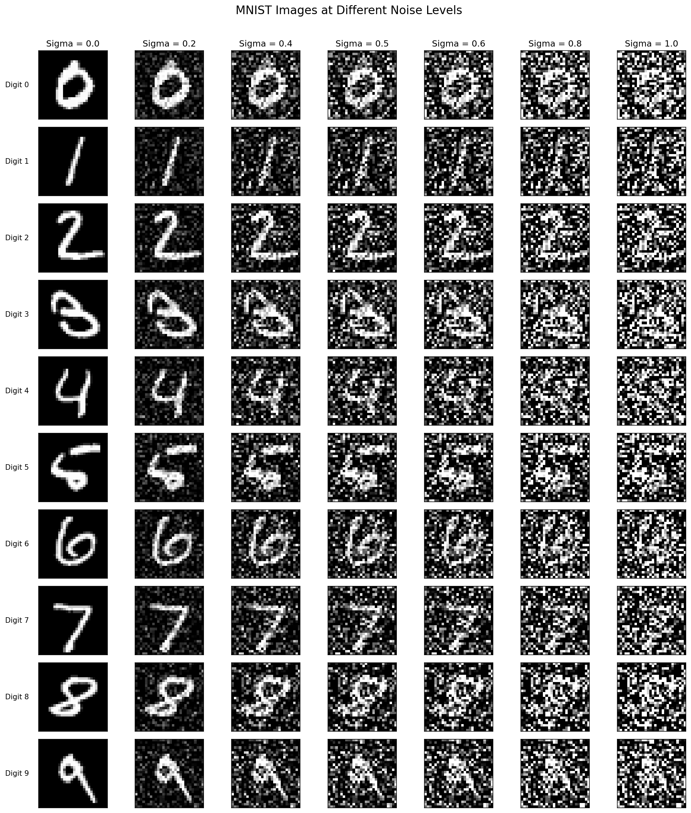
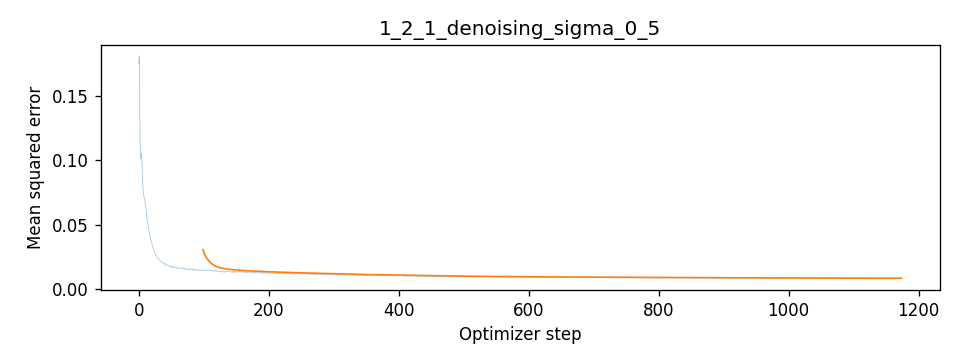
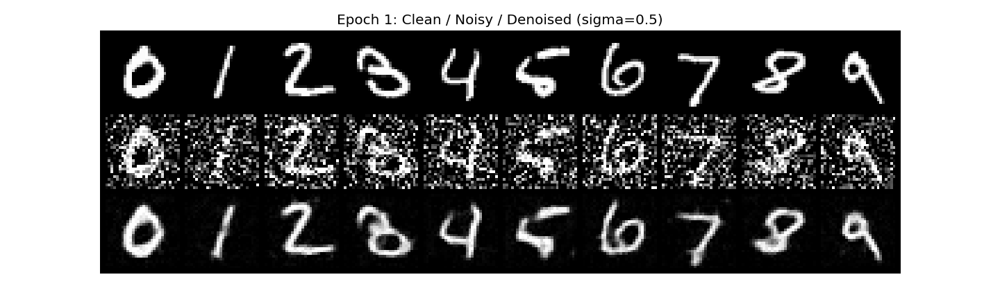
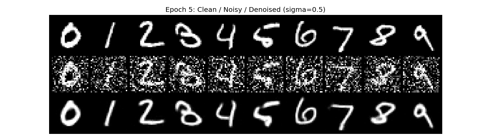
Mean training MSE decreases from 0.020447 at epoch 1 to 0.008265 at epoch 5. The outputs remove most background noise and recover recognizable strokes, with some smoothing of fine details. These example grids use held-out images; the quoted MSE values are training losses.
B1.2.2 - Out-of-Distribution Noise Testing
I apply the sigma = 0.5 model to three held-out digits (2, 5, and 8) at all seven noise levels. The same noise realization is reused across levels to make the corruption strength easier to compare.
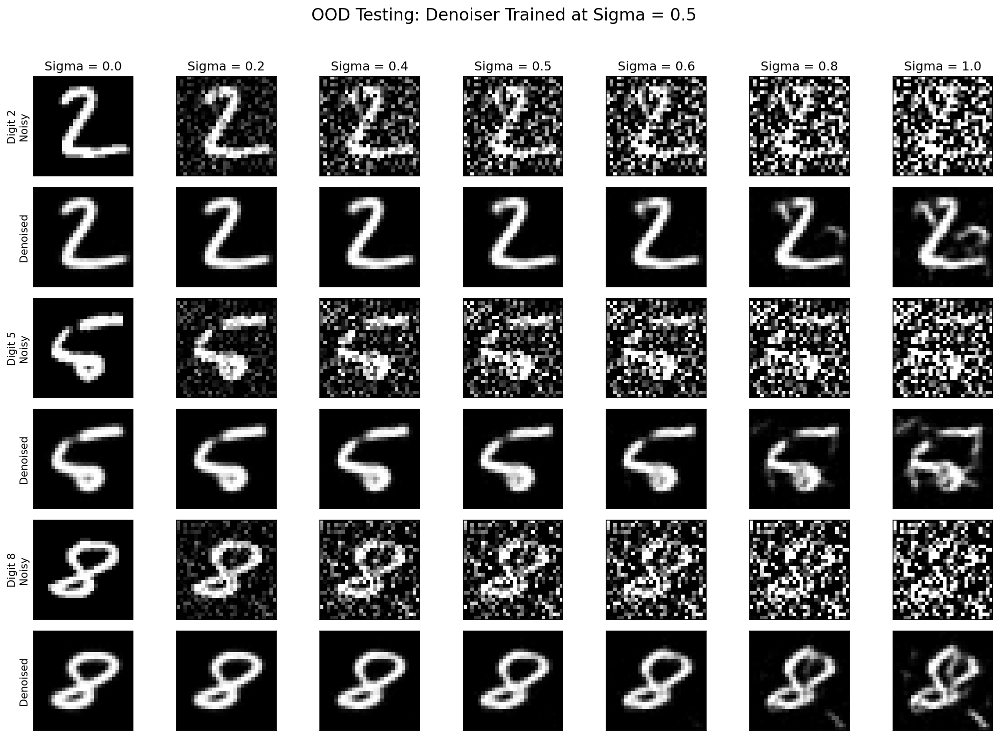
The model handles moderate noise around the training level reasonably well. At larger noise levels, particularly 0.8 and 1.0, recovered strokes become less reliable and artifacts or altered digit shapes appear. A fixed-noise denoiser does not automatically generalize to every corruption strength.
B1.2.3 - Denoising Independent Pure Noise
I train a fresh D = 128 UNet for five epochs with the same batch size and optimizer settings. This time, the input is independent Gaussian noise and the target is a clean training digit; no image information is mixed into the input.
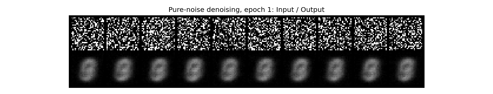
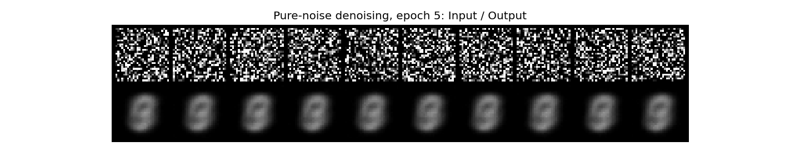
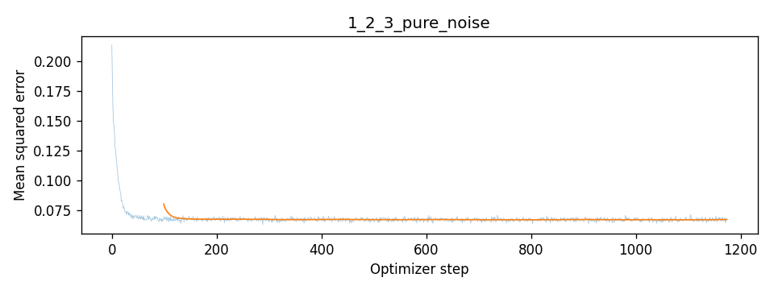
Under squared error, the optimal predictor is the conditional mean. Independence makes that mean independent of the input, so averaging the training digits is expected. The initial mean MSE of 0.073189 falls to a plateau near 0.0674. The blurry common output is consistent with the objective, rather than evidence of successful digit generation.
B2.1-B2.3 - Time-Conditioned Flow Matching
A fully connected block uses Linear -> GELU -> Linear. Two learned embeddings of scalar time multiply features after the bottleneck unflatten and after the first upsampling block. The model predicts a velocity tensor with the input image shape.
I train D = 64 for 10 epochs, batch size 64, using Adam with initial learning rate 0.01. ExponentialLR multiplies the rate by 0.11/10 after each epoch. Sampling integrates noise forward from t = 0 to 1 using 50 Euler steps.
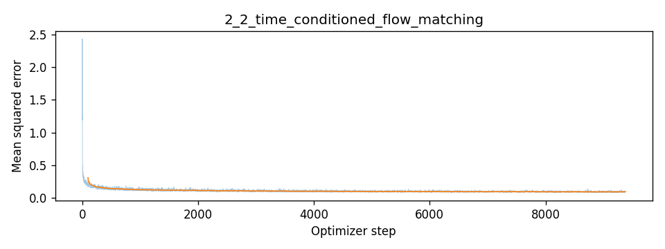
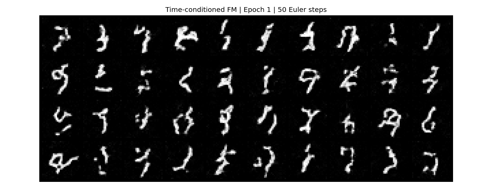
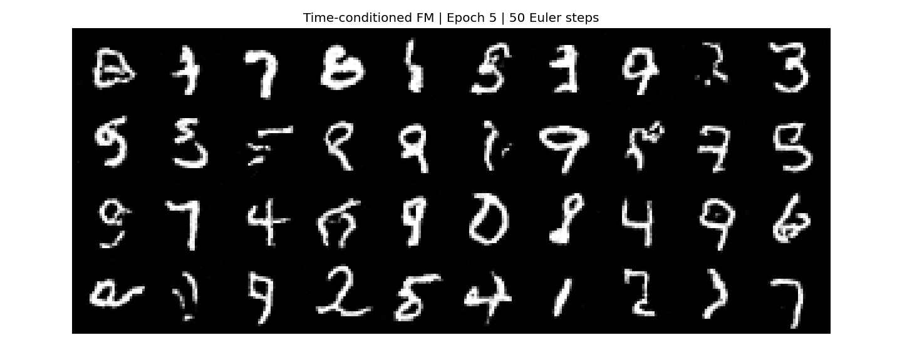
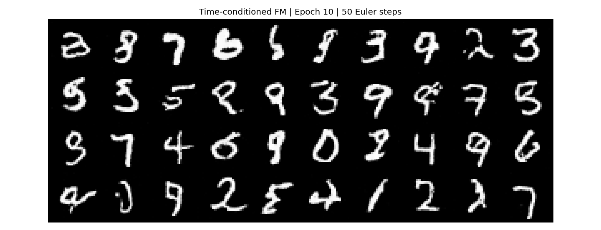
Recognizable handwritten digits emerge, but some samples remain ambiguous or have disconnected strokes. The columns have no requested digit labels: generation is conditioned only on time. A change of digit identity at a fixed position is not itself a failure.
B2.4-B2.5 - Class Conditioning and Scheduler Comparison
I add one-hot digit labels and two class embeddings. At each of the two conditioned decoder locations, the class embedding scales features and the time embedding shifts them. During training, I independently drop the entire one-hot condition with probability 0.1; mask 0 means unconditional and mask 1 keeps the label.
The scheduled experiment trains a fresh D = 64 UNet for 10 epochs, batch size 64, Adam initial learning rate 0.01, with per-epoch gamma = 0.11/10. Checkpoints are saved at epochs 1, 5, and 10.
For the independent no-scheduler experiment, I choose a constant learning rate of 0.003 to use smaller updates throughout training. Both runs use the same initialization seed and data/dropout setup. This compares practical training configurations; changing the learning rate as well as removing the scheduler prevents isolating the scheduler effect alone.
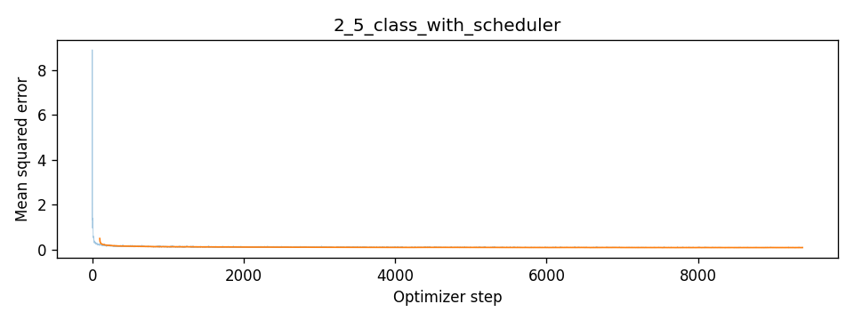
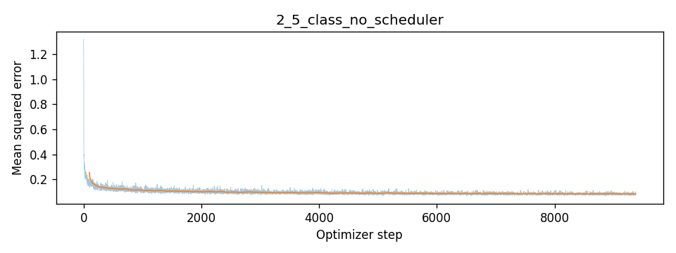
| Configuration | Epoch-10 mean training MSE |
|---|---|
| Exponential schedule, 0.01 -> 0.001 | 0.085045 |
| No scheduler, constant 0.003 | 0.085429 |
Both runs converge. Their loss plots use different vertical ranges because the early spikes differ, so the final numerical table is a clearer comparison than the apparent line height. Similar training MSE does not by itself establish equal generative quality.
B2.6 - Class-Conditioned Sampling
This guidance convention differs from Part A. I generate four instances of each digit using labels 0-9 repeated across four rows. Every comparison uses seed 180, the same 40 starting noises, and 300 Euler steps.
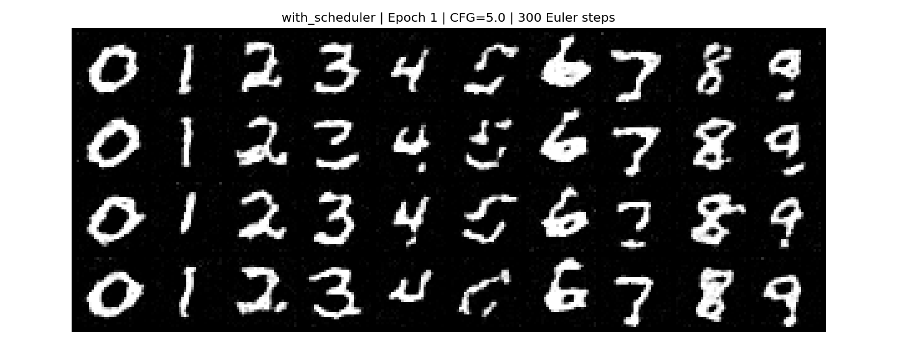
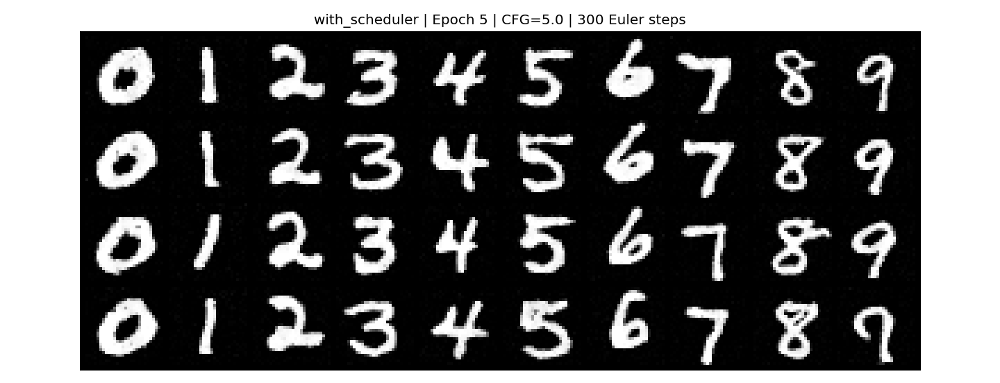
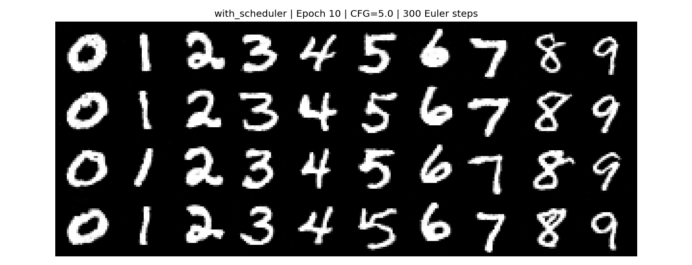
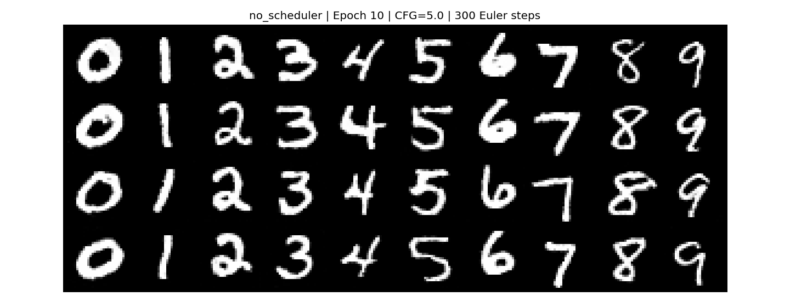
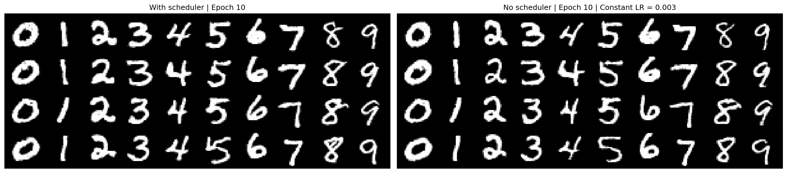
Most requested classes are already recognizable at epoch 1, with incomplete or distorted strokes in some examples. By epoch 5, shapes are more coherent and backgrounds cleaner. Improvements from epochs 5 to 10 are subtler.
At epoch 10, the constant-rate model produces visually comparable digits. Differences involve stroke thickness and shape; neither displayed grid shows a decisive overall advantage. A suitably chosen constant rate simplifies training but requires choosing that rate. This conclusion is qualitative and based on one fixed set of 40 samples, not a distribution-level metric.
CS280A Part 3.1-3.4 - Extending the Time-Only Model
I return to the time-conditioned-only model, without class labels or class guidance. Starting from its epoch-10 D = 64 checkpoint, I restore both weights and Adam state into a separate model, preserve the original baseline, and continue for 20 more epochs.
Fresh Gaussian noise, random times, and shuffled batches are used. Batch size remains 64. Checkpoints are saved every five epochs; samples at epochs 10, 20, and 30 use seed 180, 40 initial noises, and 50 Euler steps.
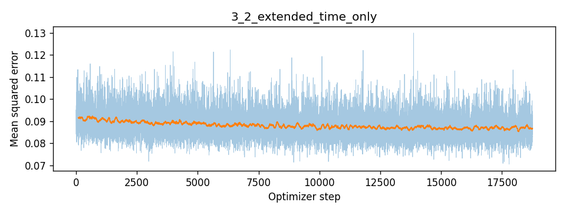
| Checkpoint | Mean training FM MSE |
|---|---|
| Epoch 10 baseline | 0.091574 |
| Epoch 20 continued | 0.087725 |
| Epoch 30 continued | 0.087085 |
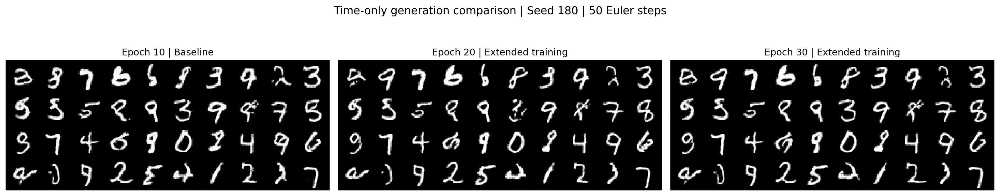
The epoch-30 training MSE is about 4.9% below the original baseline. Some samples improve, such as the digit-like 5 in row 4, column 5, but other shapes stay ambiguous. Differences between epochs 20 and 30 are small. Longer training improves the objective with limited visual gains in this comparison, at the cost of 20 additional epochs.
CS280A Part 3.5 - A Wider Time-Only UNet
Because extending D = 64 yields limited visual progress, I train a fresh time-only UNet with D = 128 for 30 epochs. Batch size is 64, Adam starts at 0.001, and exponential decay reaches 0.0001 after 30 epochs using gamma = 0.11/30. No class information is used.
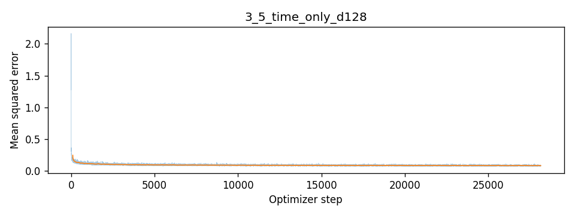
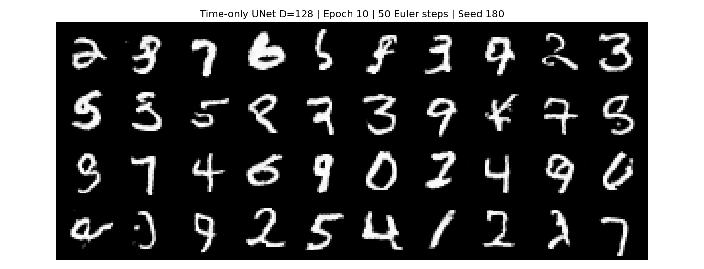
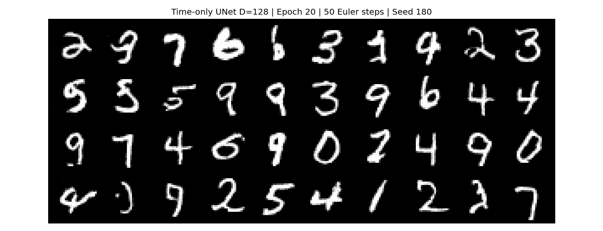
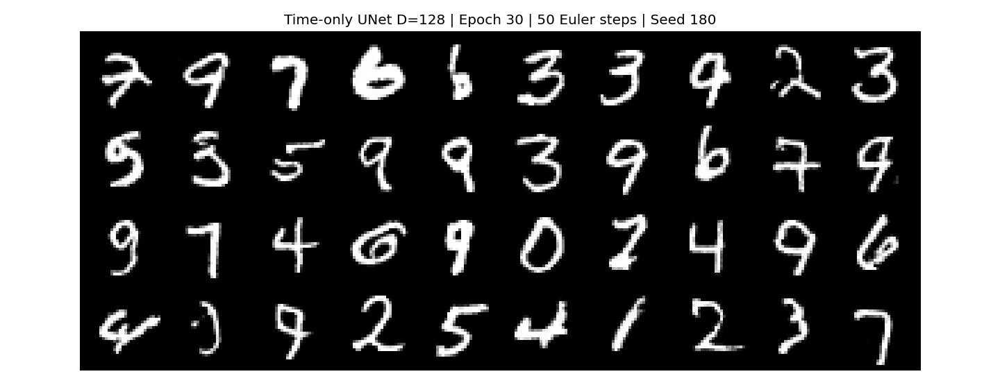
The learning curve is stable after its initial decline. More complete strokes appear in selected examples, but some samples remain ambiguous. Both width and learning-rate schedule differ from the original D = 64 baseline, so this experiment evaluates the entire configuration rather than isolating width.
CS280A Part 3.6-3.7 - Final Comparison and Conclusion
| Time-only model | Total epochs | Mean training FM MSE |
|---|---|---|
| Original D = 64 baseline | 10 | 0.091574 |
| Continued D = 64 | 30 | 0.087085 |
| Fresh wider D = 128 | 30 | 0.084525 |
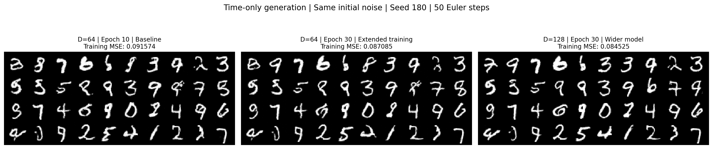
The wider model reduces mean training MSE by about 7.7% relative to the epoch-10 baseline and 2.9% relative to the continued D = 64 model. These values describe the training velocity objective, not perceptual quality or test-set reconstruction error.
In the displayed grids, several previously ambiguous samples become more recognizable in the wider model, including row 1, column 6 and row 2, column 8 (one-based indices). Improvement is not uniform: row 1, column 9 and row 4, column 2 still show incomplete or ambiguous strokes.
Increasing capacity provides a more convincing qualitative gain in selected samples than continuing the smaller model alone. It also increases model size and computation per Euler step. Using the same 50 steps does not imply the same sampling time.
The evidence supports modest improvements in this fixed-seed comparison. One seed and 40 samples do not establish a general improvement over the whole generated distribution. The remaining failure cases and changed learning-rate schedule limit the strength of the conclusion.
Assignment and starter: https://cal-cs180.github.io/fa26/hw/proj3-flow/partb.html . All figures and reported losses are from the submitted notebook; no new training was performed when preparing this webpage.